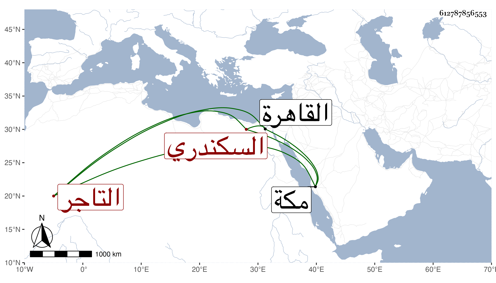

0902Sakhawi.DawLamic.ITO20230111-ara1.EIS1600.612787856553
Biography ID: 612787856553
780
علي بن صدقة السكندري التاجر . جاور بمكة سنين ثم عاد من البحر سنة خمس وتسعين ثم رجع إليها في أثناء سنة سبع وتسعين ، وزار في التي بعدها وكان في قافلتنا ثم رجع إلى القاهرة ولم يسلم من التعرض له مرة بعد أخرى ولا بأس بظاهره . وهو ابن إبراهيم بن صدقة .
